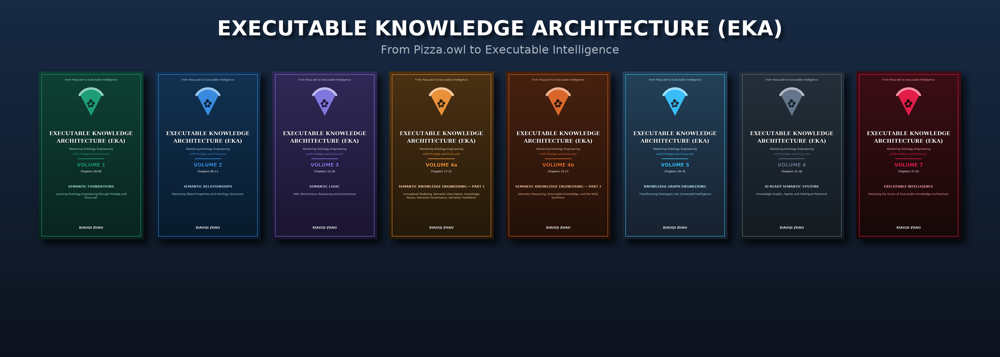
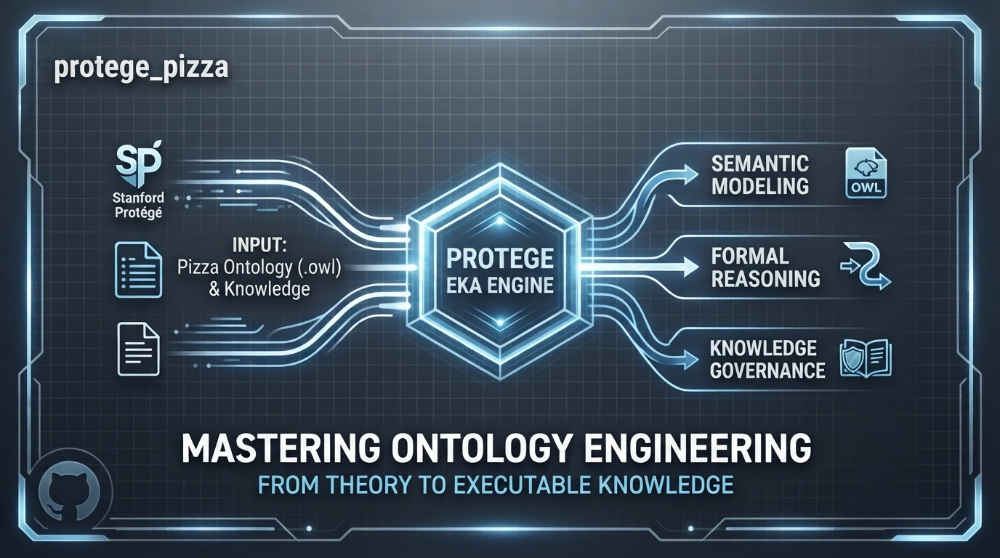

An open-source ontology engineering learning and knowledge-development platform built around the Protégé Pizza.owl tradition, extending hands-on OWL modeling into semantic governance, reasoning, knowledge graphs, and Executable Knowledge Architecture (EKA).


💡 Looking for the complete, professional guide? While this repository provides open-source snapshot code (the individual "pieces"), our structured multi-volume eBook series on Leanpub and Amazon Kindle provides the complete architectural framework, deep-dive explanations, and advanced engineering practices (such as Stage 4 Semantic Governance).

👉 Get the Full eBook on Leanpub or Get it on Amazon Kindle to support this project!
🎉 We've forked the official Protégé Desktop project — and we're taking it multilingual!
To bring the power of Protégé to a much wider audience, we have forked the original Protégé Desktop project into our brand-new open-source organization:
👉 github.com/yasen-opensource — starting with yasen-opensource/protege
ResourceBundle / .properties),
so Chinese-speaking developers and ontology engineers can learn and work in their native language.Whether you are a Java/Swing developer, a translator, a technical writer, or simply a passionate Protégé user — there is a place for you in this journey:
⭐ Star yasen-opensource/protege to follow our progress, open a discussion to say hello, and jump into the issues to claim your first contribution!
EKA stands for Executable Knowledge Architecture.
EKA is a practical framework for transforming human knowledge into machine-readable, machine-reasonable, and ultimately machine-executable intelligence.
The framework is represented as:
EKA = (K, R, Θ, Φ, Γ)
K = Knowledge
R = Reasoning & Rules
Θ = Triggers
Φ = Actions / Execution
Γ = Governance
EKA provides an architectural bridge between:
This project began as an exploration of the legendary Pizza.owl tutorial created by Michael DeBellis and the Protégé community.
Over time it evolved into a broader journey, I use Pizza.owl as a controlled environment for teaching ontology engineering as an engineering discipline:
Pizza.owl
↓
Ontology Engineering
↓
Knowledge Graphs
↓
Semantic Governance
↓
Reasoning
↓
AI-Ready Systems
↓
Executable Intelligence
The Pizza tutorial remains the educational foundation.
EKA is the destination.
This repository is the official engineering environment for the Executable Knowledge Architecture (EKA) initiative.
The objective is not simply to learn OWL or Protégé.
The objective is to learn how knowledge itself can become:
Through the EKA series you will gradually move from ontology fundamentals toward enterprise-scale knowledge architecture and intelligent systems.
In the era of AI and Large Language Models (LLMs), ontologies provide the formal semantic layer that machines need to reason reliably.
By following this repository and companion eBook series, you will learn how to:

[!Note] About the 8-volume structure. The series has been expanded from the original 7-volume plan to an 8-volume structure. The former Volume 4 (Chapters 17–27, SKDL) has been split into Volume 4a (Chapters 17–22, Stages 1–5) and Volume 4b (Chapters 23–27, Stages 6–7 + Synthesis). The split was made for two reasons: (1) Volume 4 had grown past 400 PDF pages, exceeding the Amazon KDP paperback page limit; (2) it had become disproportionately larger than Volumes 1–3. Chapter numbering is preserved; the split is a container-level change only.
Learning Ontology Engineering through Protégé and Pizza.owl
Introduces ontology engineering fundamentals, Protégé, RDF foundations, class hierarchies, semantic thinking, reasoning, and the EKA framework.
Mastering Object Properties and Ontology Structures
Introduces object properties, inverse properties, property characteristics, domain, range, and semantic relationship design.
OWL Restrictions, Reasoning and Governance
Explores existential restrictions, universal restrictions, reasoning foundations, semantic requirements, and governance concepts.
Foundations & Governance (SKDL Stages 1-5)
Introduces the Semantic Knowledge Development Lifecycle (SKDL) and walks through its first five stages: Conceptual Modeling, Semantic Description, Knowledge Reuse, Semantic Governance, and Semantic Validation. Ends with the validation discipline that prepares the ground for automated reasoning.
Reasoning & Executable Knowledge (Stages 6–7 + Synthesis)
Completes the SKDL: Semantic Reasoning, then the three-part Executable Knowledge stage (boundary control, value specification, data integrity), and closes with a synthesis of the full lifecycle. Includes the Exercise 26 troubleshooting arc — a three-week diagnostic journey through OWA counting, Stage 1 error propagation, closure-inheritance conflicts, and Protégé's local-vs-global view split.
Transforming Ontologies into Connected Intelligence
Focuses on transforming ontologies into operational knowledge graphs and connected semantic systems.
Knowledge Graphs, Agents and Intelligent Retrieval
Connects ontologies, knowledge graphs, reasoning, retrieval, and agent-based architectures.
Realizing the Vision of Executable Knowledge Architecture
Completes the transformation from semantic knowledge into executable intelligence systems.
All raw chapters remain open-source and available under CC BY-NC-SA 4.0.
Read book source: /ebook/markdown/
This repository is a companion to the complete video series.
Recommended sequence:
Videos
↓
Repository Snapshots
↓
Markdown Chapters
↓
Companion eBooks
↓
Knowledge Graph Projects
↓
Executable Knowledge Architecture
This work stands on the shoulders of giants.
Special recognition goes to:
and particularly:
Michael DeBellis
whose Pizza.owl tutorial remains one of the most influential practical introductions to ontology engineering ever created.
We are also honored to feature technical review and forewords from:
Timothy W. Cook Founder of SDC (Semantic Data Charter)
The journey begins with pizza.
But the real subject is meaning.
— Michael DeBellis
And in EKA:
The journey begins with Pizza.owl.
The destination is Executable Intelligence.
— EKA Project
Last updated at 2026-10-18